如何在安卓手机上安装国外软件
想装 YouTube，却在手机自带的应用商店里搜不到？许多在中国大陆销售的安卓手机没有预装 Google Play 商店。只要手机支持安装安卓应用包（APK），就可以先装第三方应用商店 APKPure，再从里面下载 YouTube。
开始前，先在手机上连好 VPN
如果你在中国大陆，先在这台安卓手机上连接可用的 VPN。打开手机浏览器，试试看能否访问 YouTube 网页版。能打开后，保持连接，再往下操作。
下面的图片截自 Android 15 中文模拟器，红框标出要点的位置，点图可以放大。不同品牌手机的设置名称可能略有不同。
一、在手机上安装 APKPure 商店
用手机浏览器下载 APKPure
点直接下载 APKPure 安卓安装包，也可以进入 APKPure 中文官网，点带版本号的「下载」。浏览器弹出确认框后，看一眼文件名，里面应有 APKPure，结尾是 .apk。点「下载」，完成后在通知栏点文件，或到「文件管理 → 下载」里打开它。
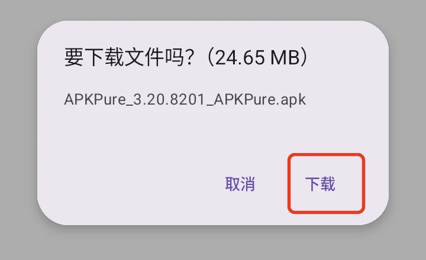
浏览器询问是否下载，点右下角「下载」。 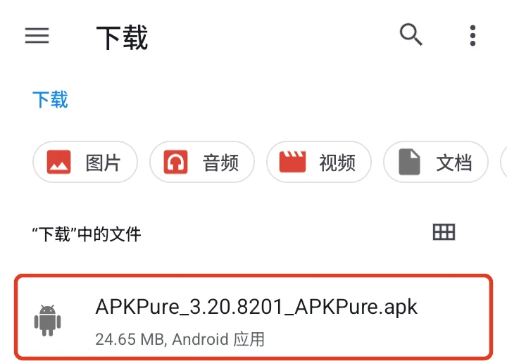
通知消失了，也可以在「下载」里找到刚才的 .apk 文件。 允许这次打开文件的应用安装 APK
第一次打开 APK 时，系统可能提示「不允许安装来自此来源的未知应用」。点「设置」，查看页面上方的应用名称。从浏览器打开可能显示浏览器名，从下载目录打开可能显示「文件管理」或图中的「内容下载管理器」。确认对应的是刚才用的应用，再打开「允许来自此来源的应用」。如果手机没有自动回到安装界面，按一次返回。
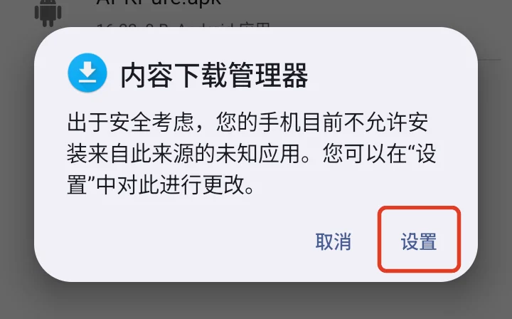
先点「设置」。如果直接出现安装确认框，可以跳到下一步。 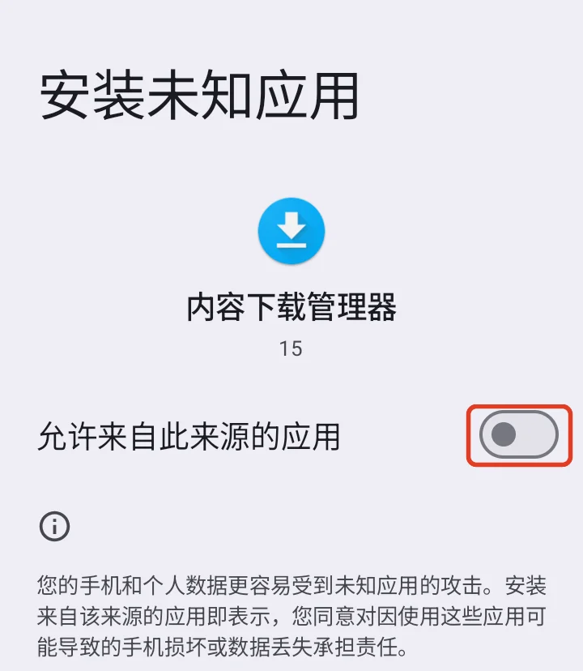
看清上方的来源名称，再打开红框里的开关。 确认安装，打开 APKPure
安装弹窗上方应显示 APKPure。点右下角「安装」，等系统显示「已安装应用」，再点「打开」。如果第一次启动时出现「精选必备好应用」，可以按返回跳过，直接进入商店。
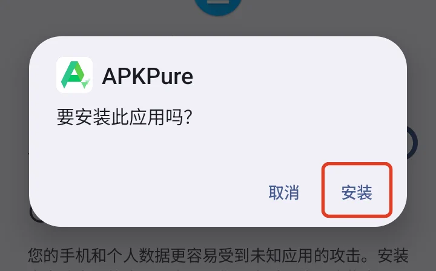
确认弹窗写着 APKPure，再点「安装」。


二、在 APKPure 里安装 YouTube
搜索 YouTube，点开手机版的结果
点 APKPure 首页顶部搜索框，输入 YouTube，按键盘上的搜索键。找到名称为「YouTube」、图标是红底白色播放键的条目，点应用名称进入详情页。图中的第一条带「广告」标记，往下一条才是要找的应用。「YouTube for Android TV」是电视版。
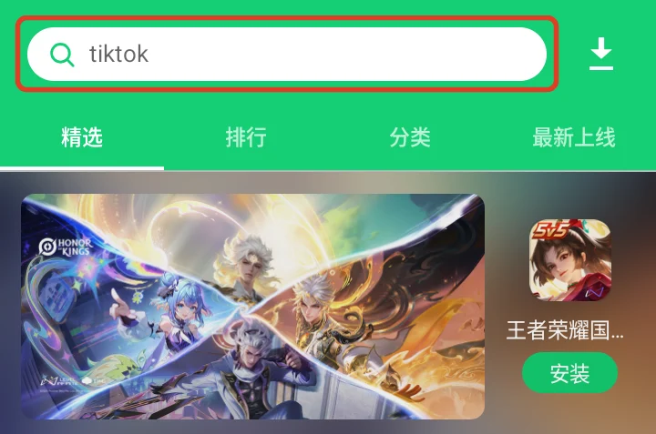
顶栏有时会显示推荐搜索词，点进去即可输入 YouTube。 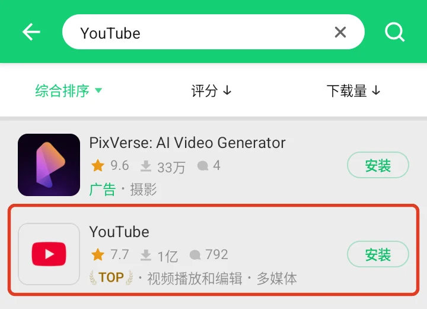
点红框里的 YouTube 名称。结果顺序可能变化。 核对 Google LLC，点页面最底部的「安装」
详情页顶部，YouTube 下面应写着开发者 Google LLC。确认后点屏幕最底部、带文件大小的绿色「安装」按钮。中间广告里的「安装」属于广告中的应用。若弹出「下载完成的通知」，可以点「取消」继续，下载大小会随版本和机型变化。
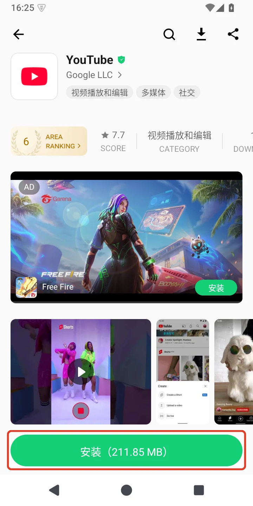
上方认准 Google LLC，下载点整页最下方的红框。 给 APKPure 安装权限，再确认安装 YouTube
第一次由 APKPure 装软件，系统可能再次弹出来源提示。这次发起安装的是 APKPure。点「设置」，确认页面上方写着 APKPure，再开启「允许来自此来源的应用」。回到安装框，看清名称是 YouTube，再点「安装」。有的手机会先完成下载才显示这一步。
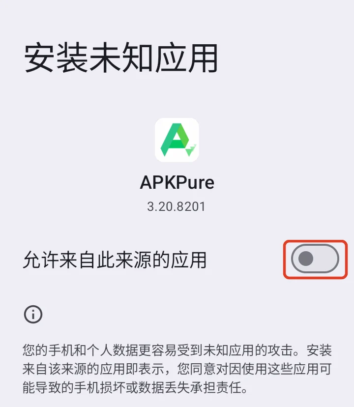
这一次要给 APKPure 开权限。 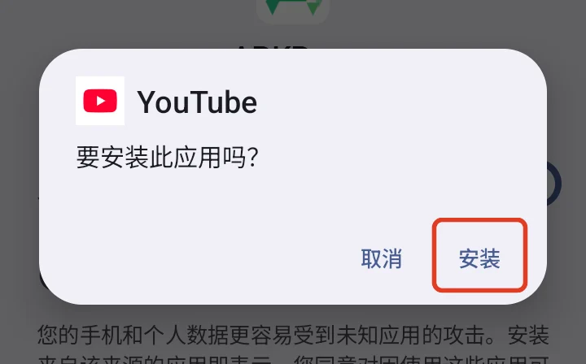
确认是 YouTube，点「安装」，等待下载和安装完成。 看到安装成功后，点「打开」
本次实测中，APKPure 显示 APP installed.，表示 YouTube 已装到手机。点「打开」启动，或点「DONE」完成，以后也可以从手机的应用列表打开 YouTube。
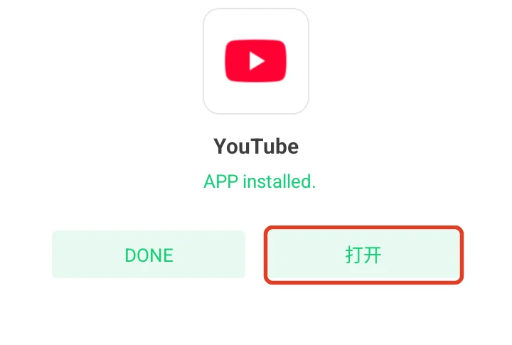
这是本次安装完成时的实际画面。


装好后打不开，怎么判断问题？
先用同一台手机打开 YouTube 网页版。如果网页也打不开，先检查 VPN 是否仍然连接、线路是否可用。如果网页能打开，App 却提示需要 Google Play 服务，或者一打开就退回，请查看手机厂商对该机型的 Google 服务支持说明。也可以直接用浏览器观看。
这次测试使用的模拟器没有 Google Play 服务。系统已安装 YouTube，但启动后退回了安装页。APKPure 能帮你取得应用安装包，手机运行它所需的 Google 服务仍取决于系统。
装好后，如果平时不用浏览器或文件管理器安装软件，可以在手机设置里搜索「安装未知应用」，选中此前授权的来源，关闭开关。以后用 APKPure 安装或更新应用时，可按需重新授权。Android 安装来源说明